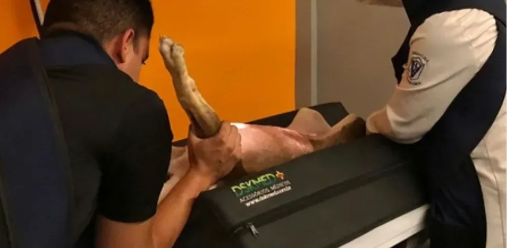
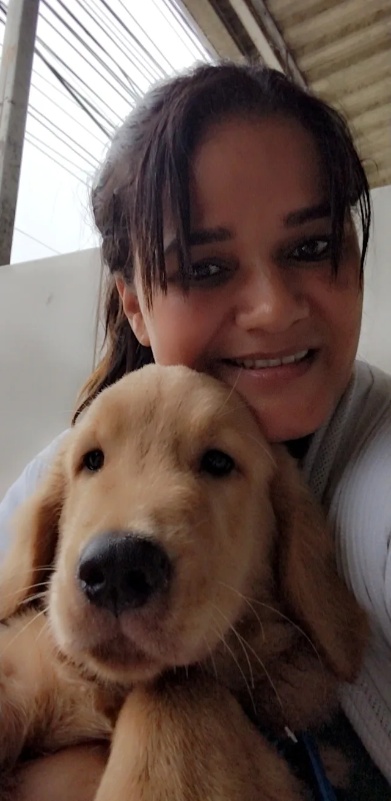
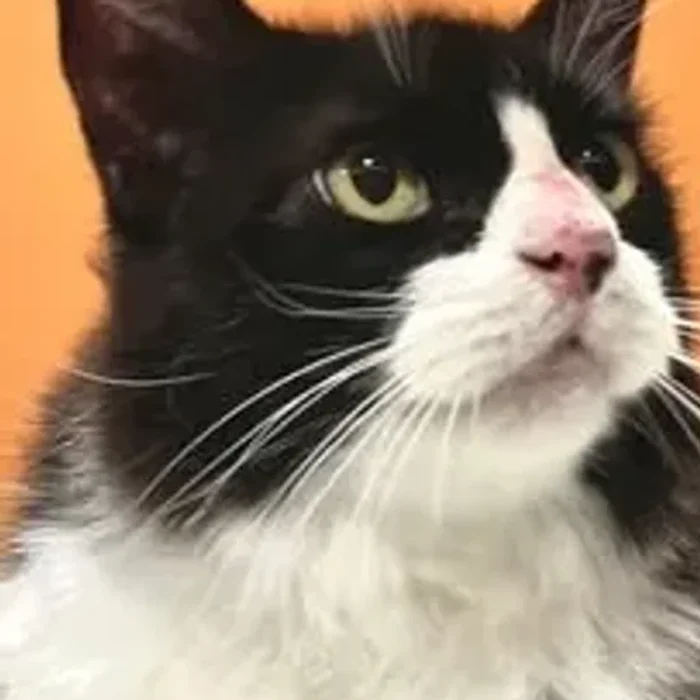

Desde 2012 cuidando dos bichos de Seropédica, na BR-465. Consulta, vacina, cirurgia, internação, laboratório, ultrassom e radiografia digital no mesmo endereço.
Quem chega com um pet doente não quer rodar a cidade atrás de exame. Aqui o seu bicho consulta, faz a imagem, colhe o sangue e, se precisar, opera e fica internado no mesmo prédio.
Imagem sai na horaAmbiente climatizadoAgendamento pelo WhatsAppEstacionamento na portaEntrada acessível

Radiografia digital, com imagem na hora
A sala de radiografia digital foi inaugurada com equipamento de alta tecnologia. A imagem sai na hora e o médico veterinário avalia com você ainda na consulta, sem encaminhamento e sem segunda viagem.
“Atendimento profissional, empático, direto, com todos os possíveis diagnósticos para salvar!”
Um procedimento seguro, não invasivo e imediato. No diagnóstico gestacional, além de confirmar a gestação, o exame avalia a viabilidade e o desenvolvimento dos filhotes. Em muitos casos conseguimos atender no mesmo dia.
“Precisei agendar uma ultrassonografia às pressas e consegui atendimento no mesmo dia. A veterinária Letícia foi um amor, super atenciosa e comprometida com o paciente.”
Estrutura climatizada para medicar, hidratar e observar o paciente pelo tempo que o caso exigir. A decisão de internar é criteriosa: quando não é preciso, o pet vai para casa com o tratamento e o retorno marcado.
“Incrivelmente honesto. Não te engana e trata com honestidade. Não interna sem necessidade e fica fazendo exames pra pegar dinheiro.”
Avaliação clínica completa e protocolo vacinal individual: não existe protocolo único, cada pet é avaliado antes de cada dose. De forma geral a vacinação do filhote começa entre os 42 e 45 dias de vida.
“Eu amo o atendimento nessa clínica. O Dr. Maicon é muito atencioso, tem muita paciência com os seus pacientes.”
A clínica nasceu com uma missão que não mudou: levar atendimento de excelência e cheio de afeto à população pet de Seropédica.

Tem tutor que sai de Bangu para trazer o bicho aqui.
M
Dr. Maicon Lopes
Médico veterinário responsável técnico. É o nome que mais aparece nas avaliações dos tutores, por atenção, paciência e clareza no que indica.
R
Dr. Rafael
À frente das cirurgias da clínica, dos procedimentos eletivos aos casos que chegam pelo diagnóstico por imagem.
L
Dra. Letícia
Médica veterinária, atende na ultrassonografia e no acompanhamento dos exames de imagem.
J
Juliana
Na recepção, é quem organiza os agendamentos e responde as mensagens que chegam pelo WhatsApp.
Responsável técnico: Maicon Lopes, CRMV 11050
Três pacientes, três histórias
Sansão
Venceu a dirofilariose. Veio para o acompanhamento, recebeu alta do tratamento médico e agora só volta para a prevenção.
Snow
Finalizou o protocolo vacinal e está pronto para desbravar o mundo com segurança. Vacina é a principal prevenção contra doenças graves.

Pablo
Chegou aos 20 anos. Veio fazer os exames periódicos e ganhou muito carinho da equipe. Com gato, a rotina de exames é o que mais protege.
O que 443 tutores contaram no Google
Avaliações públicas de quem passou pela clínica, do atendimento de rotina às cirurgias.
4,8
Nota média entre 443 avaliações
Preço justo
Sem enrolação
Ambiente limpo e climatizado
Melhor custo-benefício da região
Amam animais para além de profissionais
Preço justo
Sem enrolação
Ambiente limpo e climatizado
Melhor custo-benefício da região
Amam animais para além de profissionais
8anos de casa
“Sou cliente há 8 anos e sempre bem atendida e muito satisfeita. Tenho 7 gatos e saio de Bangu para levá-los sempre que necessário. Todos muito atenciosos e excelentes veterinários.”
Ruth Helena, no Google
“Nota 10! Desde o atendimento via WhatsApp até a consulta e os procedimentos que precisaram ser feitos. Ambiente super limpo e climatizado. Valeu Dr. Maicon e sua equipe, pela atenção e ótimo trabalho! Fidelizaram mais um cliente, até a próxima!”
“Os médicos são excelentes! Práticos, sem enrolação. Meu Bulldog foi submetido a uma cirurgia muito necessária para o diagnóstico e remoção de um linfoma. Dr. Maycon atendeu, Dr. Rafael fez a cirurgia, a recepcionista Juliana, todos foram excelentes. Minha gratidão eterna.”
“Atendimento profissional, empático, direto, calculado corretamente, com todos os possíveis diagnósticos para salvar! Sou grata pela equipe que lá trabalha. São pessoas que amam animais para além de profissionais.”
“É uma clínica que visa o melhor tratamento para o pet, não se aproveitam do momento difícil que a família possa estar passando. Super recomendo!”
“Tenho 9 pets e para qualquer coisa só levo lá. Dr. Maycon é um excelente profissional, sem contar o custo-benefício, que é o melhor da região.”
“Esse lugar é extremamente maravilhoso: atendimento, carinho com os pets e os tutores, atenciosos, preço ótimo. Dr. Maicon e equipe estão de parabéns.”
É esta a fachada que você procura. “Quem ama cuida”, como está escrito na vitrine desde o começo.
Antes de vir
As respostas abaixo são as mesmas que a nossa equipe dá no WhatsApp e no balcão.
Com quantos dias meu filhote pode tomar a primeira vacina?
Não existe um protocolo único e ideal para a vacinação de filhotes. Cada pet deve ser avaliado por um médico veterinário e receber cuidado individualizado, pensando nos riscos e benefícios de qual vacina usar, quando iniciar e qual será o intervalo entre as doses. De forma geral, a vacinação do filhote começa entre os 42 e 45 dias de vida. Depois de adquirir um pet, o primeiro passo é a consulta: é nela que definimos o melhor protocolo para o seu caso.
Animal doente ou cadela gestante pode ser vacinado?
Não. Animais doentes não podem ser vacinados, e cadelas gestantes também não devem receber vacinas. Por isso a avaliação clínica vem antes de qualquer dose.
O que é dirofilariose e por que devo me preocupar?
A dirofilariose, conhecida como “doença do verme do coração”, é uma doença parasitária transmitida pelos mosquitos Aedes, Culex e Anopheles. Sim, o mosquito da dengue também transmite. Temos visto um aumento significativo no número de casos positivos. Existe teste para diagnóstico e existe prevenção, e a prevenção salva vidas. Fale com a nossa equipe para saber como fazer o acompanhamento do seu pet.
A ultrassonografia serve para confirmar gestação?
Sim. O diagnóstico gestacional pode ser feito por ultrassonografia: um procedimento seguro, não invasivo e imediato que, além de confirmar a gestação, avalia a viabilidade e o desenvolvimento dos filhotes.
Meu gato é idoso. Precisa de exame mesmo estando bem?
Sim, e é justamente aí que os exames periódicos fazem diferença. Atendemos felinos de todas as idades. O Pablo, por exemplo, chegou aos 20 anos fazendo o acompanhamento dele aqui. Os exames de rotina detectam alterações antes de o sintoma aparecer.
Preciso marcar hora ou posso chegar direto?
Recomendamos marcar hora, para que o seu pet seja atendido sem espera. O agendamento é pelo WhatsApp (21) 96432-0255, de segunda a sexta das 9h às 18h e sábado até 13h.
Vocês fazem exame e cirurgia no mesmo lugar?
Sim. Consulta, vacina, cirurgia, internação, exames laboratoriais, ultrassonografia, radiografia digital e farmácia veterinária funcionam todos no mesmo endereço, na BR-465. Na prática, o seu pet faz o exame e já é avaliado pelo veterinário sem sair da clínica.
Seu pet precisa de atendimento hoje?
Manda uma mensagem contando o que está acontecendo. A nossa equipe responde e agenda o horário com você.